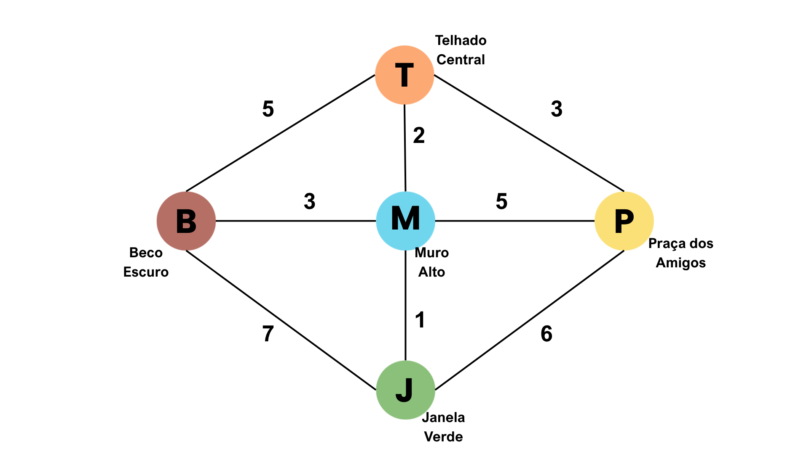

Grupo: Isabel, Larissa, Suzana, Leonardo, Nathan
Matemática Discreta - Algoritmo de Dijkstra
Relação em matemática discreta é uma conexão entre elementos de dois ou mais conjuntos. Ela indica como os elementos se associam entre si..
Exemplo: Se eu tenho um conjunto com lugares da vila e outro conjunto com caminhos, a relação "conecta-se com" diz quais lugares se ligam entre si.
No nosso trabalho: A relação que usamos é "há um caminho direto entre" Cada aresta do grafo representa um par ordenado (ou não ordenado) de vértices que estão relacionados por um caminho possível.Por exemplo, (T, M) significa que o Telhado se relaciona com o Muro porque existe um caminho direto entre eles.
Um grafo é uma estrutura matemática utilizada para modelar relações ou conexões entre objetos. Ele é composto por dois elementos principais:
Os grafos podem ser classificados de diferentes formas. Quando as arestas possuem um valor numérico associado (custo, distância, tempo, etc.), chamamos de grafo ponderado. Caso contrário, é um grafo não ponderado. Além disso, um grafo pode ser direcionado (as arestas têm sentido) ou não direcionado (as arestas representam uma conexão de mão dupla).
No contexto do nosso trabalho, a Vila dos Miados é representada por um grafo ponderado e não direcionado. Os vértices são os cinco locais por onde o gato pode passar (Telhado Central, Beco Escuro, Praça dos Amigos, Muro Alto e Janela Verde). As arestas são os caminhos possíveis entre esses locais, e os pesos representam o esforço felino (uma combinação de distância, risco e dificuldade do salto).
O Algoritmo de Dijkstra é um algoritmo clássico da Teoria dos Grafos, criado pelo cientista da computação Edsger Dijkstra. Ele é utilizado para encontrar o caminho de menor custo entre um vértice de origem e todos os demais vértices de um grafo, desde que todas as arestas tenham pesos não negativos.
Como funciona o algoritmo? (Passo a passo conceitual)
Por que usamos o Dijkstra na Vila dos Miados?
O gato precisa sair de um ponto de origem (como o Telhado Central ou a Praça dos Amigos) e chegar até a Janela Verde (seu destino desejado) gastando o menor esforço possível. O esforço é medido por uma função que leva em conta:
Ao aplicar o algoritmo de Dijkstra, conseguimos determinar, de forma precisa e matemática, qual a rota mais eficiente para o gato, evitando que ele escolha um caminho longo ou perigoso por engano. O algoritmo analisa combinações de arestas e não apenas caminhos diretos, garantindo a solução ótima.
Com isso, o algoritmo de Dijkstra garante que o gato sempre encontrará o caminho de menor esforço, evitando riscos desnecessários e otimizando seu trajeto até a Janela Verde.
| Código | Nome | Descrição |
|---|---|---|
| T | Telhado Central | Ponto de partida comum, visão privilegiada |
| B | Beco Escuro | Muitos atalhos, porém perigoso |
| P | Praça dos Amigos | Espaço aberto, movimentado por humanos |
| M | Muro Alto | Exige esforço, mas conecta caminhos |
| J | Janela Verde | Destino desejado (entrada da casa) |
Decidimos as seguintes conexões entre os vértices:
Cada aresta recebe um peso de 1 a 10. Quanto menor o peso, melhor para o gato.
| De | Para | Peso | Justificativa |
|---|---|---|---|
| T | B | 5 | Caminho de distância média, escuro e com pequeno salto |
| T | P | 3 | Caminho longo, porém totalmente seguro |
| T | M | 2 | Pulo curto entre telhado e muro, distância segura |
| B | M | 3 | Caminho curto, mas em área escura |
| B | J | 7 | Distância média, com obstáculos e um salto |
| P | M | 5 | Distância média, trecho escuro e pequeno salto |
| M | J | 1 | Caminho muito curto e seguro |
| P | J | 6 | Caminho mais longo, trecho escuro e pequeno salto |
Função de Esforço Felino: E(u,v) = d + 2r + s
Onde:
| Aresta | d | r | s | Cálculo | Peso |
|---|---|---|---|---|---|
| T→B | 2 | 1 | 1 | 2+2+1=5 | 5 |
| T→P | 3 | 0 | 0 | 3+0+0=3 | 3 |
| T→M | 1 | 0 | 1 | 1+0+1=2 | 2 |
| B→M | 1 | 1 | 0 | 1+2+0=3 | 3 |
| B→J | 2 | 2 | 1 | 2+4+1=7 | 7 |
| P→M | 2 | 1 | 1 | 2+2+1=5 | 5 |
| M→J | 1 | 0 | 0 | 1+0+0=1 | 1 |
| P→J | 3 | 1 | 1 | 3+2+1=6 | 6 |
Critério: minimizar esforço = distância + 2×risco + precisão do salto.

O grafo acima representa a Vila dos Miados. Cada vértice corresponde a um local percorrido pelo gato, enquanto as arestas representam os caminhos possíveis entre esses locais. Os números presentes nas arestas indicam os pesos calculados pela Função de Esforço Felino, utilizada para determinar o custo de cada trajeto.
Caminho mínimo encontrado: T → M → J
Custo total: 2 + 1 = 3
O algoritmo mostrou que passar pelo Muro Alto é mais eficiente do que utilizar qualquer outra rota disponível.
Caminho mínimo encontrado: P → J
Custo total: 6
Existe outro caminho com o mesmo custo: P → M → J (5 + 1 = 6). Portanto, ambos são caminhos mínimos.
Após a modelagem da Vila dos Miados e a aplicação do algoritmo de Dijkstra, foi possível identificar os caminhos de menor custo entre diferentes pontos da vila, considerando distância, risco e dificuldade dos saltos.
Cálculo do custo:
Custo total = 3
Embora existam rotas diretas e alternativas para chegar à Janela Verde, nenhuma delas possui custo inferior a 3.
| Caminho | Custo |
|---|---|
| T → M → J | 3 |
| T → P → J | 9 |
| T → B → J | 12 |
| T → B → M → J | 9 |
| T → P → M → J | 9 |
O resultado mostra que o vértice M (Muro Alto) funciona como um ponto estratégico da rede, pois possui conexões de baixo custo e oferece acesso rápido à Janela Verde.
Além disso, a aresta M → J possui peso 1, o menor peso de todo o grafo, tornando esse trecho é extremamente vantajoso.
O algoritmo encontrou: P → J
Custo total = 6
Entretanto, existem outros caminhos com exatamente o mesmo custo.
Neste caso, o grafo apresenta dois caminhos mínimos equivalentes.
| Caminho | Custo |
|---|---|
| P → J | 6 |
| P → M → J | 6 |
| P → T → M → J | 6 |
| P → T → B → J | 15 |
Observa-se que o caminho direto possui menos etapas, enquanto os caminhos que passam pelo Muro Alto aproveitam a aresta de menor peso do grafo (M → J). Dependendo da implementação, o algoritmo pode retornar qualquer um dos caminhos mínimos encontrados.
Os resultados demonstram que o caminho mais curto em número de arestas nem sempre é o melhor. O algoritmo considera os pesos associados a cada ligação, que representam:
Dessa forma, a rota escolhida minimiza o esforço total do gato e não apenas a quantidade de vértices visitados.
A aplicação do algoritmo de Dijkstra mostrou-se eficiente para determinar as melhores rotas na Vila dos Miados.
Portanto, o modelo criado e os resultados obtidos confirmam que o algoritmo de Dijkstra é adequado para resolver problemas de roteamento em grafos ponderados, identificando sempre o caminho de menor custo entre dois pontos da rede.
function Dijkstra(grafo, origem, destino):
distancias[origem] = 0
para cada vértice v:
se v ≠ origem:
distancias[v] = ∞
adicionar v em nao_visitados
enquanto nao_visitados não vazio:
u = vértice com menor distância
remover u de nao_visitados
para cada vizinho v de u:
se v está em nao_visitados:
nova_dist = distancias[u] + peso(u,v)
se nova_dist < distancias[v]:
distancias[v] = nova_dist
predecessor[v] = u
retornar distancias[destino]